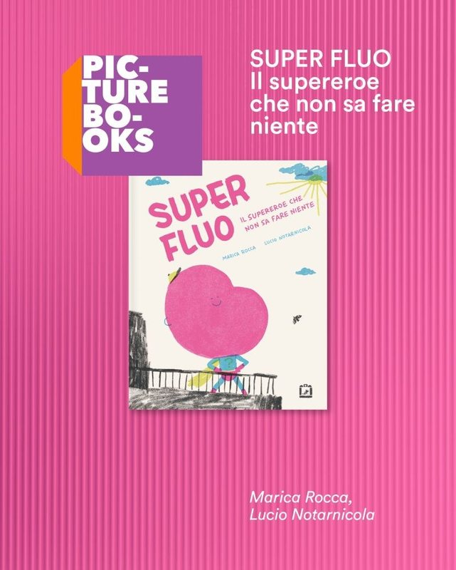

How Super Fluo began
The idea of a completely useless superhero - superfluous, as the Italian name suggests - began with a drawing by Lucio.

Picture book
The superhero who cannot do anything
Some superheroes are born lucky, with astonishing abilities. Then there is Super Fluo, who cannot do anything at all.English rendering of the Italian excerpt on this website; not a quotation from a published English edition.
Not all superheroes are the same. Some can find Dad's glasses, warm up lunch with a touch or fix anything by turning their hands into tools. Super Fluo is another story. He is convinced he has extraordinary powers: making flowers grow, moving the Sun through yoga and stopping the rain after days of intense concentration. But there is one person for whom he truly is a superhero: his beloved Granny. For her, he finds a way to make flowers grow, move the Sun, stop the rain and, above all, make her laugh.
Buy from Amazon. External links open in a new tab.
Super Fluo is a story about superpowers that do not look like superpowers: small, everyday abilities that are almost invisible.
Super Fluo dreams of great adventures, but his most special talent emerges when he is with his Granny: listening to her, helping her, keeping her company and finding ways to make her feel good.
It is a book about attention and empathy, and what we can do for the people we love, even when we cannot fly, lift buildings or really stop the rain.
The idea of a completely useless superhero - superfluous, as the Italian name suggests - began with a drawing by Lucio.

Early storyboard sketches that became part of the finished book.

Notes, ideas and details that did not make it into the final version, but are still part of the story.

Super Fluo was selected for IBBY Italia Choice 2026 in the Picture Books category.
Official selection (PDF)
Super Fluo is among the books selected for Beautiful Italian Books 2026.

7 November 2026 – 14 February 2027
Lucio Notarnicola's illustrations for Super Fluo on display at Fondazione Štěpán Zavřel in Sarmede.
About the exhibitionA presentation of Super Fluo at Libreria Sottobosco, sharing the book and its world of everyday superpowers.

Alfredo Paniconi looks at the writing, illustrations and production, focusing on the shift from humour to tenderness.
ReadA reading centred on self-esteem, empathy and the value of small acts of care.
ReadThe editors of la Lettura recommend Super Fluo in their book tips, introducing its hero and his unlikely superpowers.
ReadAn episode of I libri di Radio Kids, in the series curated by Andersen magazine, dedicated to Super Fluo.
ListenSuper Fluo among the booksellers' recommendations in the newsletter Un inizio caleidoscopico.
Read